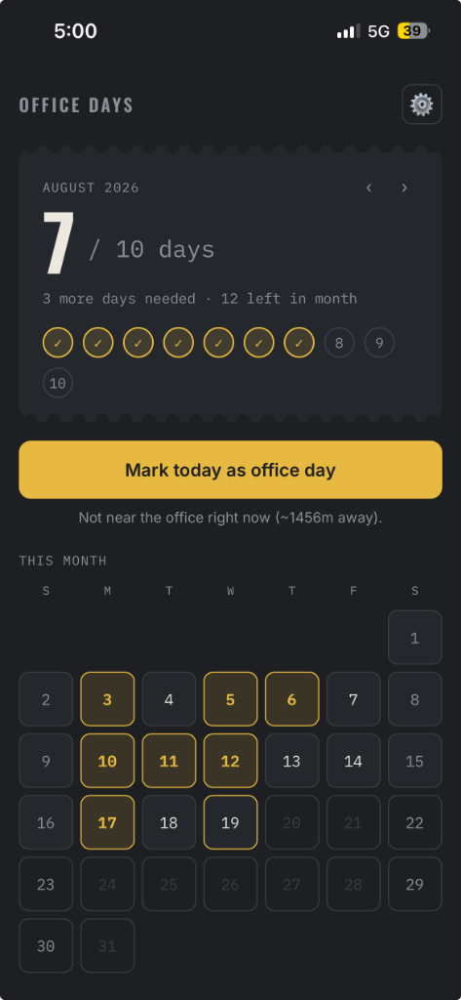
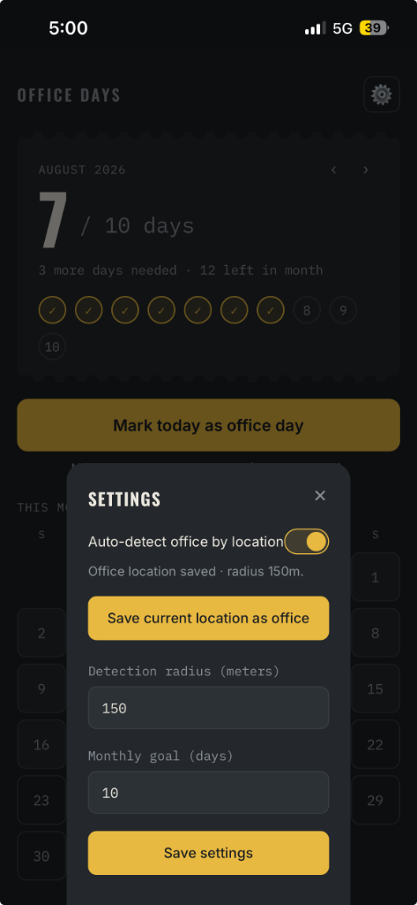

OFFICE TRACKER
"Seat booked ≠ actually went to the office."
My company's official seat-booking portal tells me which days I booked a seat, but it does not reliably tell me which days I actually went to the office. Remembering past physical presence for monthly records was manual, fuzzy, and error-prone.
I didn't need another heavy corporate dashboard or battery-killing continuous background GPS tracking. I just needed a single, reliable location-based presence signal captured once during peak office hours.
Designed for Zero-Cognitive-Load Attendance

7 / 10 days counter with dynamic monthly deficit tracker and checked stamp tokens.
~1456m away) validating office proximity.

150m) preventing transit false positives.
localStorage.
How it works: At 2:00 PM, an iOS Shortcut triggers a single foreground GPS check. If the device is within ~150 meters of the saved office coordinates (computed via spherical Haversine formula), it marks the day automatically in the lightweight Progressive Web App.
Key Product Decisions & Trade-Offs
Why 2:00 PM?
Midday is when physical office presence is most certain. It avoids false positives from morning subway commutes through the neighborhood and eliminates the risk of missing someone who leaves by 5:00 PM.
Why ~150 Meters?
Urban high-rises cause concrete GPS drift up to 80m. A 150m radius encompasses the entire building footprint while strictly excluding nearby subway transit corridors and perimeter cafes.
Retro Ticket Stamp UX
Rather than generic checkboxes or sterile corporate tables, a tactile punch-card ticket UI gamifies monthly goal completion and creates immediate, satisfying visual progress feedback.
Zero-Cloud Privacy
Only a binary flag (1 / 0) and date are stored locally in the browser's localStorage. No continuous path tracking, no battery drain, and zero personal telemetry sent to any external server.